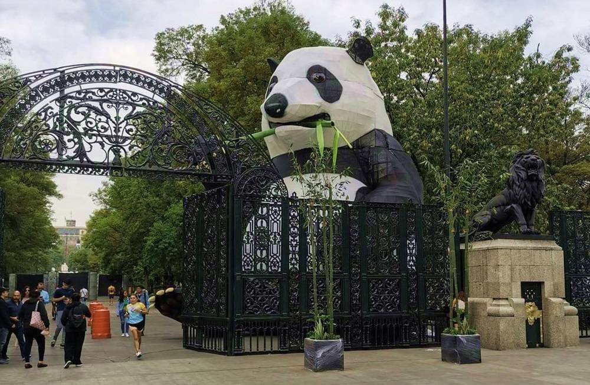
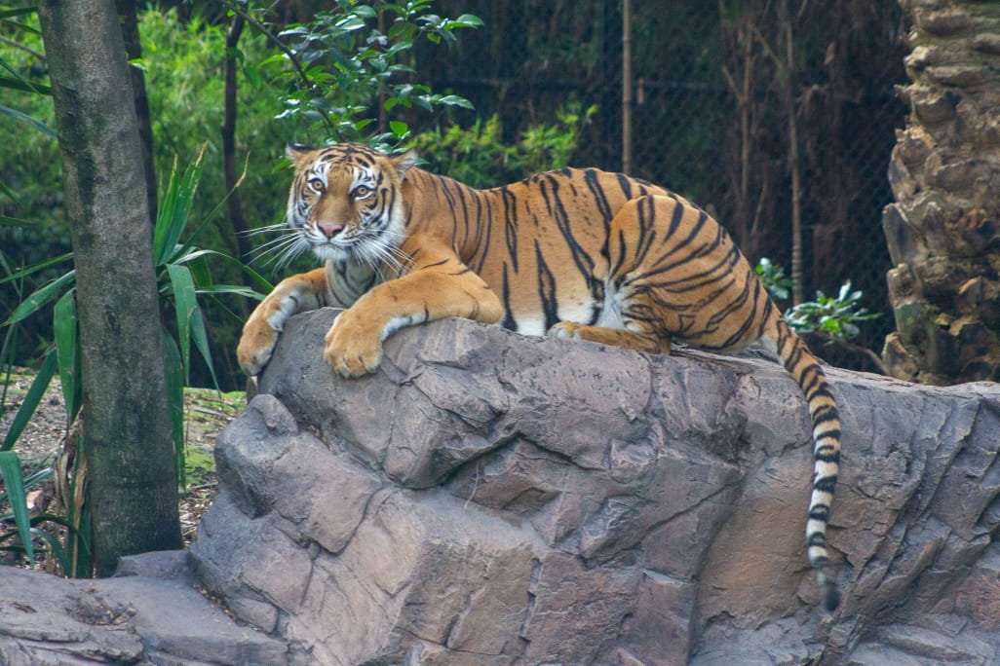
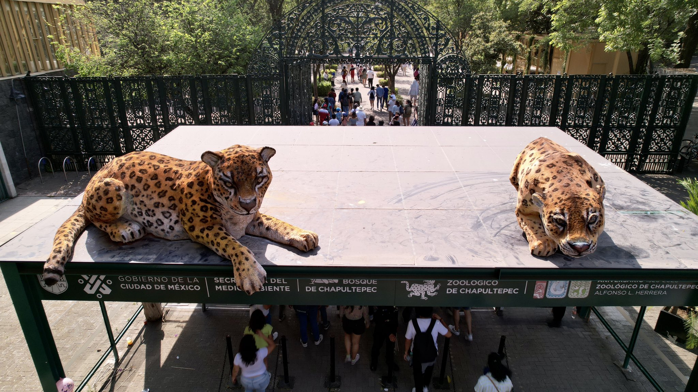

Descubre la Fauna

Interacción Animal

Actividades Educativas
Diversión en Familia
Sumérgete en la maravilla de la biodiversidad en el Zoológico de Chapultepec. Hogar de una amplia variedad de especies, este zoológico ofrece una experiencia educativa y emocionante para visitantes de todas las edades.
Desde feroces felinos hasta adorables criaturas, el Zoológico de Chapultepec te invita a descubrir la belleza y la importancia de la vida animal. Únete a nosotros y embárcate en un viaje fascinante a través de la fauna del mundo.
El Zoológico de Chapultepec ofrece una variedad de actividades para hacer tu visita memorable. Aquí algunas sugerencias:
fotografías
educación
diversión en grupo
aire libre
cafetería